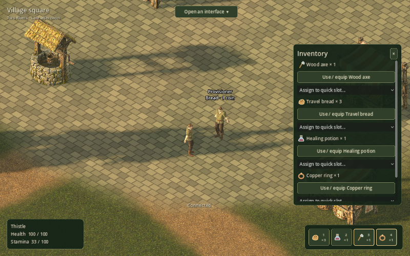
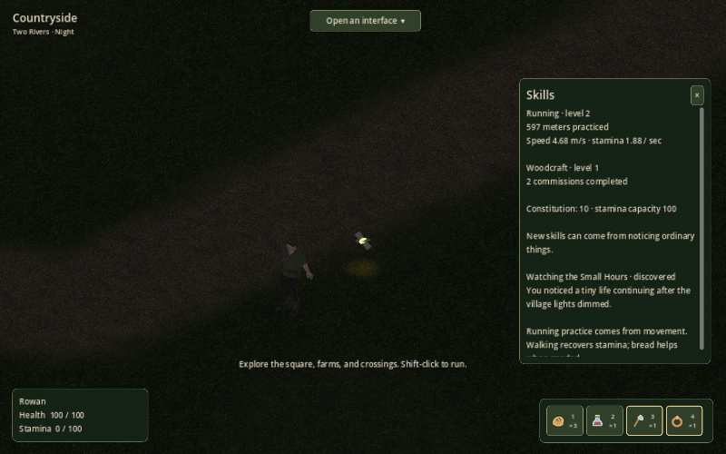

A working day beyond
the workshop.
Repeat work, a citizen with a routine, skills earned through movement and observation, and a small life continuing in the meadow after sunset.
Play the next cut
Windows is exported for your playtest. The Linux release client has been run against the server and rendered with its separate art pack.
Package checksumsConnection settings
Use your existing traveler profile.
- Extract the whole ZIP, keeping the EXE and art pack together.
- Choose Connection settings, enter the host and UDP port, then connect.
- Open Journal for the next work activity.
Use client 06 here. A 05 client fails before a friendly version message. The 06 playtest uses a copy of your saved world. Original 05 remains separate on port 7777. Progress in the two worlds will diverge.
What to try A few useful checks
One more order
Visit the carpenter. Accept another order, gather branches at two outdoor woodfalls, prepare six wood at the bench, and deliver them for three coins and practice.
The starter axe stays yours. Prepared wood is now visibly separate from raw wood.
Meet the provisioner
Find them through Map / travel. They work at the west farm in the morning, trade bread at the square later, and return home at night.
Make the interface yours
Drag panel titles. Rename your traveler. Right-click a quick slot to inspect or clear it, then assign something from Inventory.
Watch the small hours
At night, follow Journal to the south meadow and observe a lantern moth nearby. Running and observing ordinary things now leave saved skill progress.
The interface World first, with usable character tools

Connection / world has a visible close button. Journal, Inventory and other panels remember their positions. Typing a name no longer rotates the camera.
The join screen shows the selected endpoint and profile. Build identifiers are available in Connection / world. No permanent Longwalk branding covers the village.
Quick slots remain fixed at four. Skill-dependent interface capacity and broader equipment discovery remain future design work.
A village that keeps going Time, work and a first ecology

| System | Current behavior |
|---|---|
| Running | Practice follows actual distance. Levels gently improve speed and stamina efficiency. Exhaustion leaves the remaining route walking. |
| Work | Repeat carpenter orders pay coins and Woodcraft practice. Shared branch piles recover after three minutes of running world time. |
| Observation | Reading the Grain and Watching the Small Hours are one-time discoveries. Repeating the same inspection does not farm progress. |
| Daylight | Lighting and routines follow the server clock. Owners can set the hour and day length through the interface. |
| Ecology | Thirty simulated days stayed between six and twelve moths at all supported day lengths. Moths seek mates between patches; they are not tied to camera visibility. |
Server, recovery and packaging One writer, with the recovery path exercised
Docker and Kubernetes
The package includes a Docker image, Compose, and a single-writer Kubernetes deployment with a PVC, probes and controlled shutdown. It has been exercised in a local kind cluster.
Recoverable failure
Normal shutdown saves a final checkpoint. A damaged latest save enters owner-only recovery. Restoring retains player goods and leaves the world paused until resumed.
Smaller client updates
The art lives in a verified reusable pack, about 95 MiB. The client-only ZIP is about 32 MiB and needs this matching art pack. Missing or mismatched art opens a repair chooser.
No lab deployment, public DNS, registry publication or main-project architecture change was made.
| Evidence | Result |
|---|---|
| Playable work loop | Final packaged Linux client completed a repeat order and bought bread. |
| Persistence | Reconnect, restart, abrupt stop, backup and restore exercised. |
| Write failure | Final build rolled back an unsaved item use, froze movement and recovered through restore/resume. |
| Damaged save | Owner-only recovery, blocked play, restore and resumed world verified. |
| Kubernetes | Packaged client and Kubernetes server report build b66cb8e51e26; commission progress and ring retained. |
| Sustained multiplayer | Sixteen final release clients passed 45 minutes, including graceful and forced restarts. Identity and inventory retained. Observed worst tick: 3.47 seconds during distant-route bursts. |
| Windows | Exported and packaged. Your Windows playtest is still needed. |
Where the next slices belong Kept deliberately open
People and close views
Human models, poses and interior furnishings remain provisional. Establish the close-view art target before producing more people or replacing the village's architectural styles.
More useful places
Another enterable building and another ordinary activity can build on this shared workshop. Locks, climbing and swimming should remain explicit contextual actions with their own rules.
Character growth
Broader equipment discovery, growing item and interface bars, and more skills need a playable progression model. Constitution currently stays at ten.
Operational growth
The prototype still has a temporary owner, private LAN transport and immutable full snapshots without automatic pruning. Storage retention, identity and measured regional capacity come before MMO distribution. Sixteen-player distant-route bursts still cause noticeable planning delays.